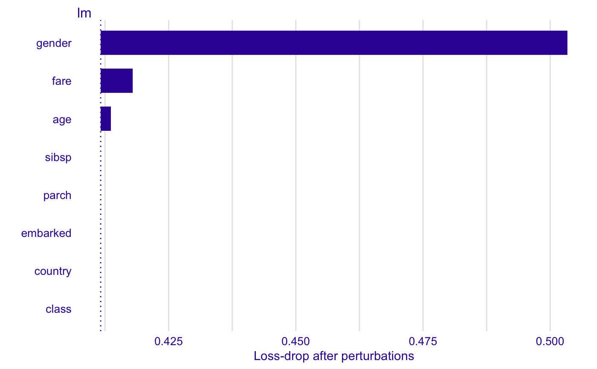
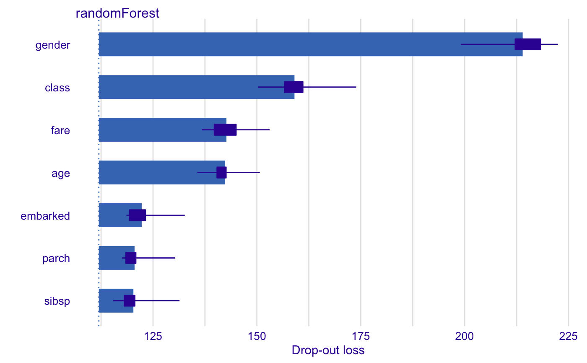
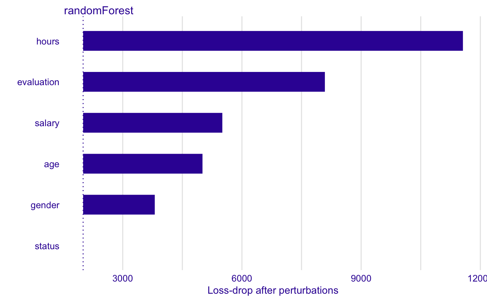
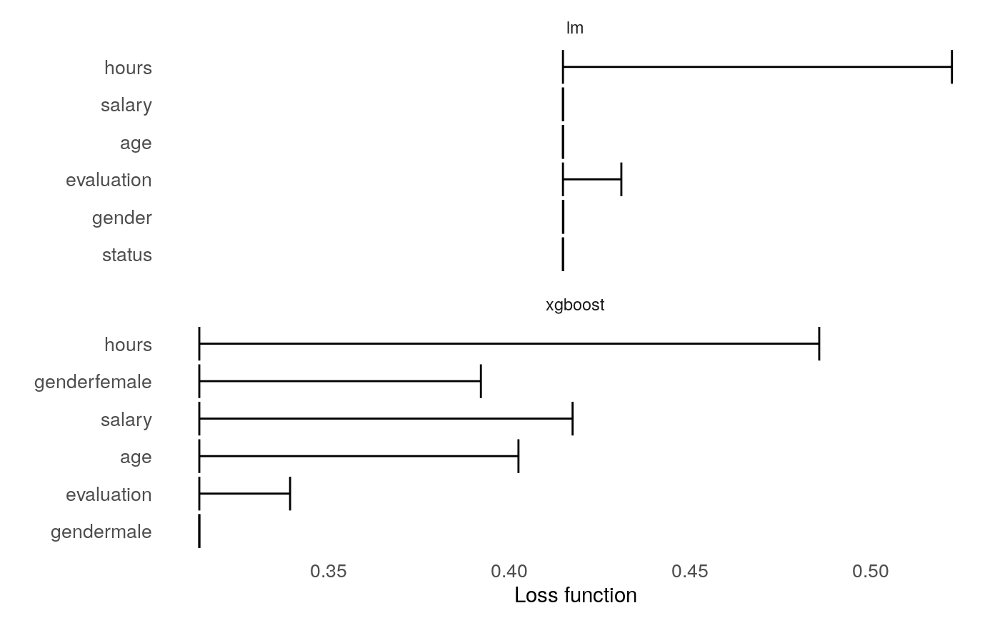
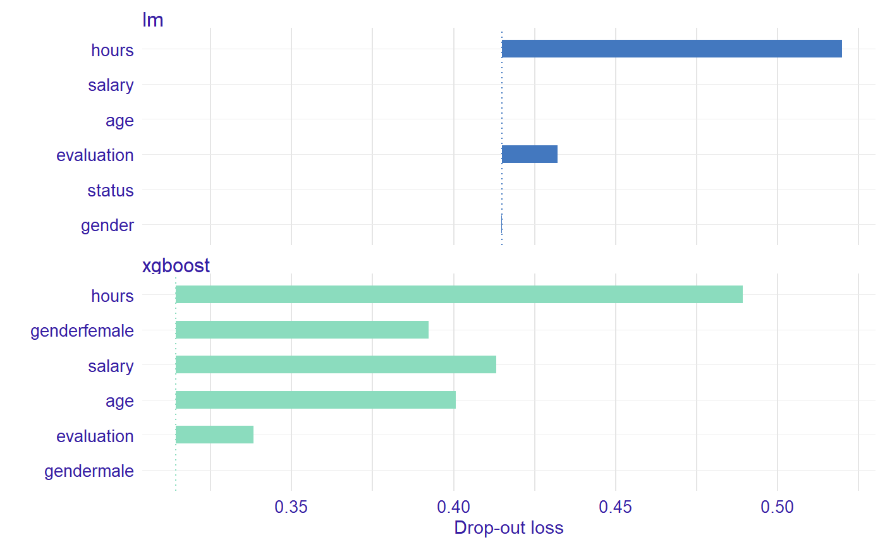

Function plot.feature_importance_explainer plots variable importance calculated as
changes in the loss function after variable drops.
It uses output from feature_importance function that corresponds to permutation based measure of variable importance.
Variables are sorted in the same order in all panels.
The order depends on the average drop out loss.
In different panels variable contributions may not look like sorted if variable importance is different in different in different models.
# S3 method for feature_importance_explainer plot(x, ..., max_vars = NULL, bar_width = 10)
Arguments
| x | a variable dropout explainer produced with the 'feature_importance' function |
|---|---|
| ... | other explainers that shall be plotted together |
| max_vars | maximum number of variables that shall be presented for for each model. By default NULL what means all variables |
| bar_width | width of bars. By default 10 |
Value
a ggplot2 object
Details
Find more details in the Feature Importance Chapter.
References
Predictive Models: Visual Exploration, Explanation and Debugging https://pbiecek.github.io/PM_VEE
Examples
library("DALEX") # Toy examples, because CRAN angels ask for them titanic <- na.omit(titanic) model_titanic_glm <- glm(survived == "yes" ~ gender + age + fare, data = titanic, family = "binomial") explain_titanic_glm <- explain(model_titanic_glm, data = titanic[,-9], y = titanic$survived == "yes")#> Preparation of a new explainer is initiated #> -> model label : lm (default) #> -> data : 2099 rows 8 cols #> -> target variable : 2099 values #> -> predict function : yhat.glm will be used (default) #> -> predicted values : numerical, min = 0.1483104 , mean = 0.3244402 , max = 0.9822194 #> -> residual function : difference between y and yhat (default) #> -> residuals : numerical, min = -0.8840083 , mean = 1.110794e-14 , max = 0.8437859 #> A new explainer has been created!library("randomForest") model_titanic_rf <- randomForest(survived == "yes" ~ gender + age + class + embarked + fare + sibsp + parch, data = titanic)#> Warning: The response has five or fewer unique values. Are you sure you want to do regression?#> Preparation of a new explainer is initiated #> -> model label : randomForest (default) #> -> data : 2099 rows 8 cols #> -> target variable : 2099 values #> -> predict function : yhat.randomForest will be used (default) #> -> predicted values : numerical, min = 0.007911313 , mean = 0.3245188 , max = 0.9959239 #> -> residual function : difference between y and yhat (default) #> -> residuals : numerical, min = -0.791543 , mean = -7.856883e-05 , max = 0.9028798 #> A new explainer has been created!HR_rf_model <- randomForest(status~., data = HR, ntree = 100) explainer_rf <- explain(HR_rf_model, data = HR, y = HR$status)#> Preparation of a new explainer is initiated #> -> model label : randomForest (default) #> -> data : 7847 rows 6 cols #> -> target variable : 7847 values #> -> target variable : Please note that 'y' is a factor. (WARNING) #> -> target variable : Consider changing the 'y' to a logical or numerical vector. #> -> target variable : Otherwise I will not be able to calculate residuals or loss function. #> -> data : A column identical to the target variable `y` has been found in the `data`. (WARNING) #> -> data : It is highly recommended to pass `data` without the target variable column #> -> predict function : yhat.randomForest will be used (default)#> Warning: warunek posiada długość > 1 i tylko pierwszy element będzie użyty#> -> predicted values : numerical, min = 0 , mean = 0.3333333 , max = 1 #> -> residual function : difference between y and yhat (default)#> Warning: '-' nie ma sensu dla czynników#> -> residuals : numerical, min = NA , mean = NA , max = NA #> A new explainer has been created!vd_rf <- feature_importance(explainer_rf, type = "raw", loss_function = loss_cross_entropy) head(vd_rf)#> variable dropout_loss label #> 1 _full_model_ 1947.160 randomForest #> 2 status 1947.160 randomForest #> 3 gender 3723.507 randomForest #> 4 age 4969.606 randomForest #> 5 salary 5414.841 randomForest #> 6 evaluation 8239.249 randomForestplot(vd_rf)HR_glm_model <- glm(status == "fired"~., data = HR, family = "binomial") explainer_glm <- explain(HR_glm_model, data = HR, y = HR$status == "fired")#> Preparation of a new explainer is initiated #> -> model label : lm (default) #> -> data : 7847 rows 6 cols #> -> target variable : 7847 values #> -> predict function : yhat.glm will be used (default) #> -> predicted values : numerical, min = 0.00861694 , mean = 0.3638333 , max = 0.7822214 #> -> residual function : difference between y and yhat (default) #> -> residuals : numerical, min = -0.7755901 , mean = -1.294707e-13 , max = 0.9820537 #> A new explainer has been created!vd_glm <- feature_importance(explainer_glm, type = "raw", loss_function = loss_root_mean_square) head(vd_glm)#> variable dropout_loss label #> 1 _full_model_ 0.4148305 lm #> 2 status 0.4148305 lm #> 3 gender 0.4148483 lm #> 4 salary 0.4148608 lm #> 5 age 0.4149018 lm #> 6 evaluation 0.4316230 lmplot(vd_glm)library("xgboost") model_martix_train <- model.matrix(status == "fired" ~ . -1, HR) data_train <- xgb.DMatrix(model_martix_train, label = HR$status == "fired") param <- list(max_depth = 2, eta = 1, silent = 1, nthread = 2, objective = "binary:logistic", eval_metric = "auc") HR_xgb_model <- xgb.train(param, data_train, nrounds = 50) explainer_xgb <- explain(HR_xgb_model, data = model_martix_train, y = HR$status == "fired", label = "xgboost")#> Preparation of a new explainer is initiated #> -> model label : xgboost #> -> data : 7847 rows 6 cols #> -> target variable : 7847 values #> -> predict function : yhat.default will be used (default) #> -> predicted values : numerical, min = 1.687903e-06 , mean = 0.363713 , max = 0.9996712 #> -> residual function : difference between y and yhat (default) #> -> residuals : numerical, min = -0.9885727 , mean = 0.0001203497 , max = 0.9970635 #> A new explainer has been created!#> variable dropout_loss label #> 1 _full_model_ 0.3142729 xgboost #> 2 gendermale 0.3142729 xgboost #> 3 evaluation 0.3392718 xgboost #> 4 genderfemale 0.3945447 xgboost #> 5 age 0.4017713 xgboost #> 6 salary 0.4144865 xgboost